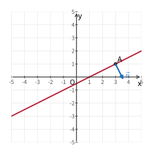
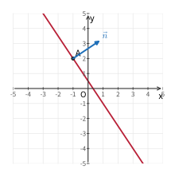
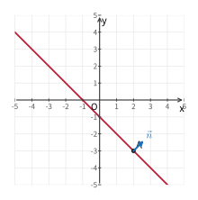

別冊練習問題 4 の解答 法線ベクトルと直線の方程式
(1) 点 \(A\left(3,\ 1\right)\) を通り、\(\vec n=\left(1,\ -2\right)\) に垂直な直線の方程式を求めよ。また、原点とこの直線の距離を求めよ。
法線ベクトルとの垂直条件
直線上の点 \(P(x,y)\) について \(\overrightarrow{AP}\perp\vec n\)、つまり
\[\vec n\cdot\overrightarrow{AP}=0\]成分で書く
\[\left(1\right)(x-\left(3\right))+\left(-2\right)(y-\left(1\right))=0\]\[x - 2 y - 1=0\]原点からの距離
\(ax+by+c=0\) と点 \((x_0,y_0)\) の距離は \(\dfrac{|ax_0+by_0+c|}{\sqrt{a^2+b^2}}\)。
\[\dfrac{|-1|}{\sqrt{\left(1\right)^2+\left(-2\right)^2}}=\dfrac{1}{\sqrt{5}}=\dfrac{\sqrt{5}}{5}\]
【答案】
\[x - 2 y - 1=0,\ \ \text{距離 }\dfrac{\sqrt{5}}{5}\]答
(2) 点 \(A\left(-1,\ 2\right)\) を通り、\(\vec n=\left(3,\ 2\right)\) に垂直な直線の方程式を求めよ。また、原点とこの直線の距離を求めよ。
法線ベクトルとの垂直条件
直線上の点 \(P(x,y)\) について \(\overrightarrow{AP}\perp\vec n\)、つまり
\[\vec n\cdot\overrightarrow{AP}=0\]成分で書く
\[\left(3\right)(x-\left(-1\right))+\left(2\right)(y-\left(2\right))=0\]\[3 x + 2 y - 1=0\]原点からの距離
\(ax+by+c=0\) と点 \((x_0,y_0)\) の距離は \(\dfrac{|ax_0+by_0+c|}{\sqrt{a^2+b^2}}\)。
\[\dfrac{|-1|}{\sqrt{\left(3\right)^2+\left(2\right)^2}}=\dfrac{1}{\sqrt{13}}=\dfrac{\sqrt{13}}{13}\]
【答案】
\[3 x + 2 y - 1=0,\ \ \text{距離 }\dfrac{\sqrt{13}}{13}\]答
(3) 点 \(A\left(2,\ -3\right)\) を通り、\(\vec n=\left(1,\ 1\right)\) に垂直な直線の方程式を求めよ。また、原点とこの直線の距離を求めよ。
法線ベクトルとの垂直条件
直線上の点 \(P(x,y)\) について \(\overrightarrow{AP}\perp\vec n\)、つまり
\[\vec n\cdot\overrightarrow{AP}=0\]成分で書く
\[\left(1\right)(x-\left(2\right))+\left(1\right)(y-\left(-3\right))=0\]\[x + y + 1=0\]原点からの距離
\(ax+by+c=0\) と点 \((x_0,y_0)\) の距離は \(\dfrac{|ax_0+by_0+c|}{\sqrt{a^2+b^2}}\)。
\[\dfrac{|1|}{\sqrt{\left(1\right)^2+\left(1\right)^2}}=\dfrac{1}{\sqrt{2}}=\dfrac{\sqrt{2}}{2}\]
【答案】
\[x + y + 1=0,\ \ \text{距離 }\dfrac{\sqrt{2}}{2}\]答